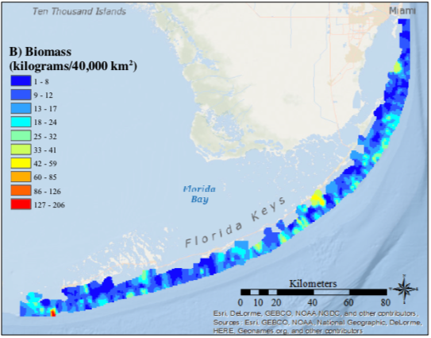
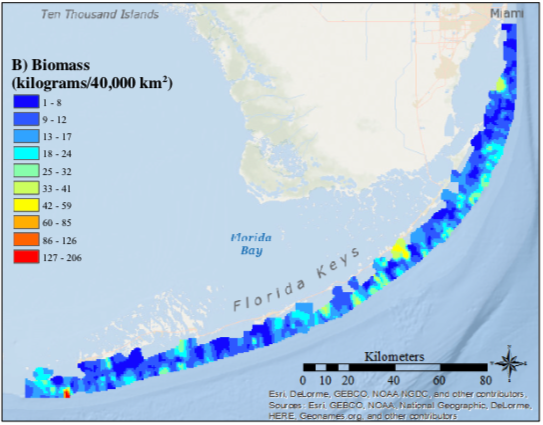

Table of Contents
Overall
The maps and timeseries are from:
Hepner, Megan E., “Reef Fish Biodiversity in the Florida Keys National Marine Sanctuary” (2017). Graduate Theses and Dissertations. https://scholarcommons.usf.edu/etd/7408
See Also:
- jeremiaheb/rvc: New implementation of the rvcstats package, which produces summary statistics for the South Florida Reef Visual Census
- Marine Biodiversity Observation Network: Florida Keys Reef Fish Visual Census: Loop Current flow variability impacts on species diversity
- Marine Biodiversity Observation Network: Florida Keys Reef Fish Visual Census: Florida Keys Reef Fish Visual Census: Biodiversity Indexing
Maps
 
 
Time Series